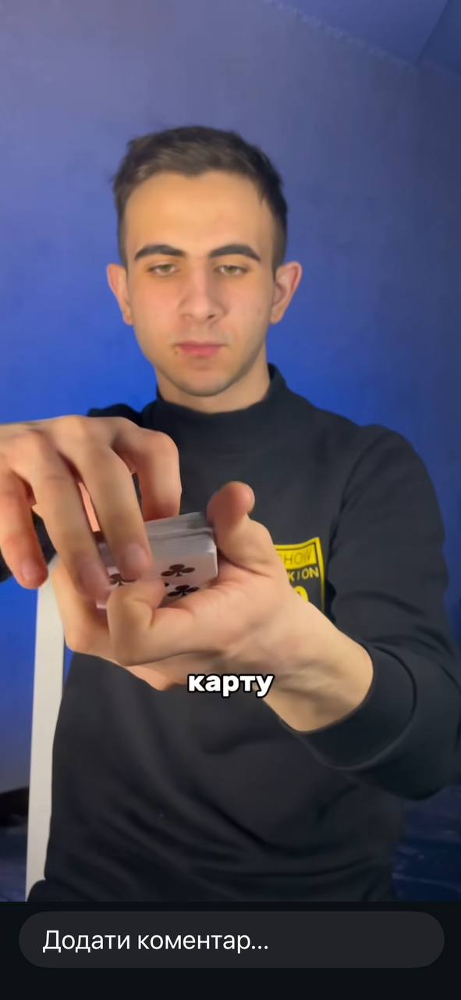

БІОГРАФІЯ НАЗАРА ВАММИ ФОКУСНИКА
Назар Вамма — український фокусник, автор відеоконтенту та творець магічних трюків. У соціальних мережах він відомий під ніком nazar.trick, а також під назвою «Назар Фокусник». Він займається створенням розважального контенту, пов’язаного з мистецтвом магії та ілюзії. З раннього віку Назар цікавився фокусами та різними магічними трюками. Йому подобалося дивувати людей незвичайними ілюзіями та показувати, як прості предмети можуть перетворюватися на справжню магію. З часом це захоплення переросло у справжнє хобі, а пізніше — у створення власного контенту. Назар почав ділитися своїми фокусами в інтернеті, щоб показати їх ширшій аудиторії. Основною платформою для його відео стала соціальна мережа TikTok. Саме там він публікує короткі відео зі своїми трюками. У цих роликах Назар демонструє різні фокуси з картами, монетами та іншими предметами. Його відео відрізняються простотою, динамікою та цікавими ідеями. Завдяки цьому глядачі можуть не тільки подивитися фокуси, а й надихнутися мистецтвом магії. Багато людей дивляться його ролики, щоб дізнатися щось нове або просто отримати гарні емоції. Окрім створення відео, Назар також займається розробкою власних магічних ідей. Одним із його проєктів стало створення власного набору фокусів. Такий набір призначений для людей, які хочуть навчитися показувати магічні трюки самостійно. У наборі можуть бути різні предмети та інструкції, які допомагають початківцям освоїти основи фокусів. Фокуси — це особливий вид мистецтва. Вони поєднують спритність рук, уважність, тренування та творчий підхід. Назар постійно вдосконалює свої навички та намагається створювати нові трюки, щоб дивувати глядачів. Сьогодні Назар продовжує активно розвиватися у сфері створення магічного контенту. Він працює над новими ідеями, публікує відео та розвиває свої сторінки в інтернеті. Його головна мета — показати людям, що магія може бути цікавою, веселою та доступною для кожного. Назар Вамма є прикладом людини, яка перетворила своє захоплення у творчість. Завдяки своїй наполегливості та любові до фокусів він продовжує розвивати свою діяльність і ділитися магією з глядачами.